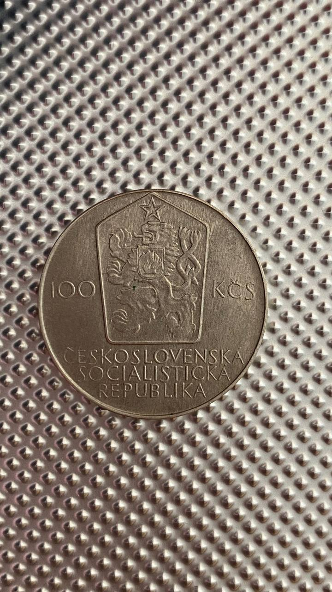
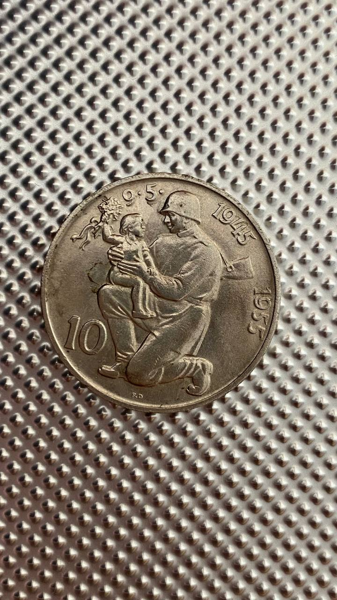
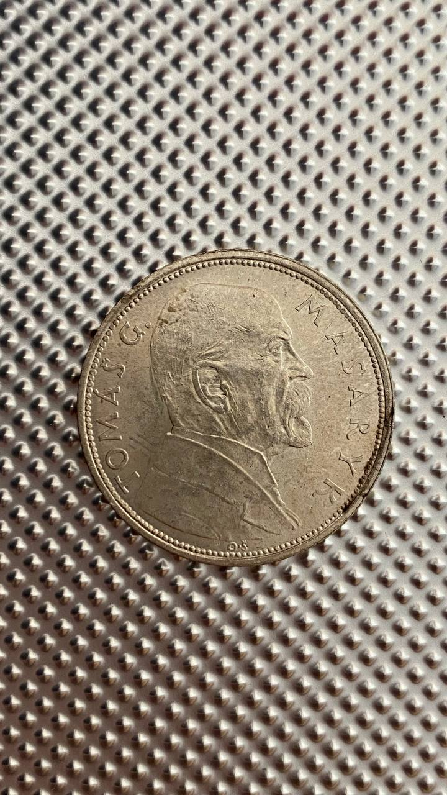

.png)
.png)
.png)

-
Чехословаччіна
50 крон 1948р.срібло 500 проба
тираж 1 000 000
стан добрий - Ціна 7.3 €
-
Чехословаччіна
10 крон 1966р.срібло 500 проба
тираж 115 000
стан добрий - Ціна 9.2 €
- 
-
Чехословаччіна
100 крон 1980р.срібло 500 проба
тираж 110 000
стан добрий - Ціна 9.15 €

-
Чехословаччіна
100 крон 1948р.срібло 500 проба
тираж 1000 000
стан добрий - Ціна 9.97 €
-
Чехословаччіна
100 крон 1948р.срібло 500 проба
тираж 1000 000
стан добрий - Ціна 9.40 €
-
Чехословаччіна
50 крон 1947р.срібло 500 проба
тираж 1000 000
стан добрий - Ціна 9.5 €
- 
-
Чехословаччіна
10 крон 1955р.срібло 500 проба
тираж 300 000
стан добрий - Ціна 8.74 €
-
Чехословаччіна
25 крон 1954р.срібло 500 проба
тираж 250 000
стан добрий - Ціна 12.08 €
-
Німеччіна
5 рейхсмарок 1937р. j срібло 900 проба
тираж 2 191 000
стан добрий - Ціна 13.47 €
- 
-
Чехословаччіна
10 крон 1928р.срібло 700 проба
тираж 1000 000
стан добрий - Ціна 10.21 €

-
Австрія
1 шилінг 1924р.срібло 800 проба
тираж 11 086 000
стан добрий - Ціна 8.99 €
-
Чехословаччіна
5 крон 1928р.срібло 500 проба
тираж 1 710 000
стан добрий - Ціна 6.32 €

-
Чехословаччіна
10 крон 1954р.срібло 500 проба
тираж 250 000
стан добрий - Ціна 10.00 €

-
Чехословаччіна
10 крон 1964р.срібло 500 проба
тираж 120 000
стан добрий - Ціна 8.71 €
-
Чехословаччіна
10 крон 1931р.срібло 700 проба
тираж 6 689 000
стан добрий - Ціна 7.00 €
-
Німеччіна 2 рейхсмарок
1937р. A срібло 625 проба
тираж 23 425 000
стан добрий - Ціна 8.64 €

-
Чехословаччіна
25 крон 1970р.срібло 500 проба
тираж 95 000
стан добрий - Ціна 9.30 €


-
Чехословаччіна
1 крона 1955р.срібло 500 проба
тираж 200 000
стан добрий - Ціна 11.77 €